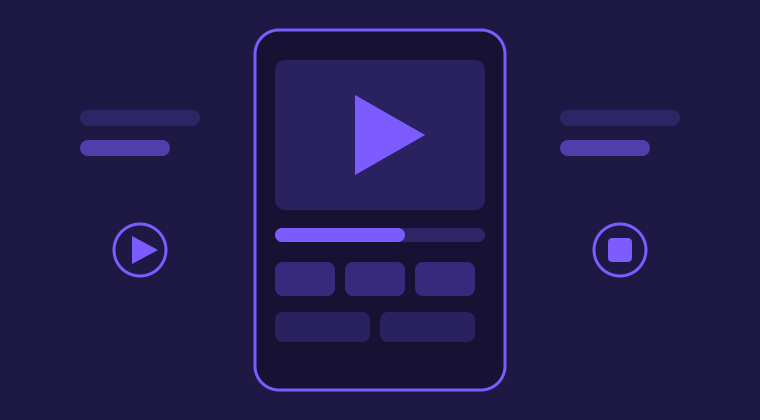

CapCut Pro MOD APK for Android
CapCut is one of the most used video editors on Android. People use it to cut clips, add music, write captions, and post short videos on TikTok, Reels, and Shorts. The free app is strong, but some of its best tools sit in the paid Pro plan. CapCut Pro MOD APK is a modified build of the app that opens those in-app Pro editing tools without a subscription inside the app itself.
This small site explains the MOD in plain words. You can read what it is, which Pro tools it unlocks, the current version facts, and the honest limits every user should know before installing anything. Nothing is hidden and nothing is overpromised.

What Is CapCut Pro MOD APK?
An APK is the install file Android uses for apps. A MOD APK is that same kind of file after someone has changed the app code. In this case, the change unlocks the Pro editing tools that the normal app keeps behind a paid plan. The editor itself works the way CapCut users already know: a timeline at the bottom, tools above it, and an export button when the video is ready.
The MOD is built for Android phones and tablets. It is not a separate new editor and it does not change how editing works. If you have edited in CapCut before, every button will feel familiar. The difference is only in which tools are open when you tap them.
Main Pro Features at a Glance
The MOD unlocks the full set of in-app Pro editing tools. The ones people ask about most are:
- Premium effects, filters, and transitions that the free app locks
- Premium templates, fonts, and text styles for titles and captions
- No watermark on exported videos
- No ads while editing, so the work is not interrupted
- AI background remover for clean subject cutouts
- Automatic captions that turn speech into text
- Keyframe animation for smooth movement and zoom effects
- Export up to 4K at 60 frames per second on supported phones
Each of these tools gets its own short section on the features page of this site, written in the same plain style, so you can see what each tool actually does before you decide anything.
Quick Facts
| App | CapCut Pro MOD APK |
|---|---|
| Latest version | v19.9.0 |
| File size | 307.45 MB |
| Updated | October 2026 |
| Android needed | Android 6.0 or later, Android 10 or later recommended |
| Built for | Android phones and tablets |
The file is large, so check your free storage before you install. A phone with a few gigabytes free and a recent Android version will run long projects and 4K exports much more smoothly than an old phone near its storage limit.
Who Is It For?
This build suits creators who edit short videos every week and keep hitting the locked tools: a transition they want, a template with a watermark, or a caption style in the Pro set. It also suits small business owners who make product clips and want clean exports without paying a monthly plan for tools they use in the app.
It is less suited to people who depend on CapCut cloud storage, account sync between devices, or a work account that must stay fully standard. Those parts belong to the online service, not the app file, and the honest note below explains that clearly.
Honest note: a MOD is an unofficial modified build. It is not released by the app maker. In-app Pro editing tools are unlocked, but online and server side features such as cloud storage, account sync, and some AI credits may not work in a MOD. Read that twice before you install, and keep backups of any project you care about.
Where to Go Next
When you are ready to set it up, the install guide on this site walks through each step in order, from getting the file to opening the app for the first time. If you want the detail on each tool first, the Pro features page covers effects, templates, captions, keyframes, and 4K export one by one. The download itself lives on CapctProAPK.com, the main site for CapCut Pro MOD APK, because this small guide site carries information only and hosts no app files.
Short FAQ
What does the MOD unlock?
It unlocks the in-app Pro editing tools: premium effects, filters, transitions and templates, watermark free export, no ads while editing, the AI background remover, auto captions, keyframes, and export up to 4K at 60fps on phones that support it.
What Android version do I need?
You need Android 6.0 or later. Android 10 or later is recommended, because newer versions handle big video files and high resolution exports with fewer crashes and less lag.
Does the MOD work on a computer or an iPhone?
No. This build is an Android file. An iPhone cannot open an APK file, and a Windows computer cannot install one directly. PC and iPhone users need a different route, which the main site explains on its own pages.
Will my CapCut account and cloud projects carry over?
Not always. Account sync and cloud storage are online services run on servers, and a modified build may not connect to them the normal way. Export and save any project you care about before you switch builds.